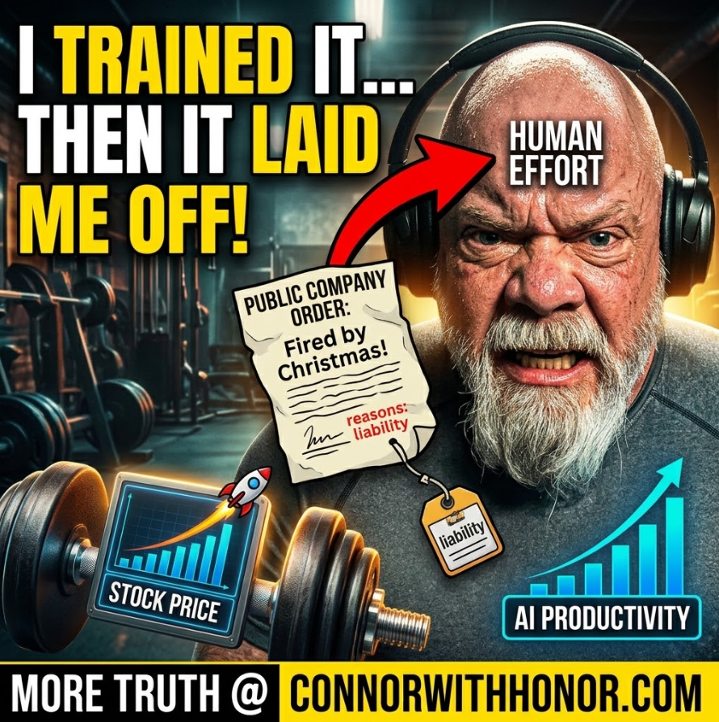

AI Job Loss Does Not Have To Happen, The 24 Hour Math Nobody Is Running
September 2, 2026 // Episode 161The Machine
I want to ramble on one more time about job loss and artificial intelligence, because I do not think it has to happen. I am not a mega business owner. I am somewhat of an entrepreneur, a few different lifetimes and a few different endeavors behind me, and I have put AI systems into a lot of small businesses here in Santa Clarita. I keep running the same math in my head and it does not come out the way the headlines say it does.
Who Is Actually Making The Layoff Decision
The decision is being made at the shareholder level for companies that happen to be publicly traded. Those businesses carry requirements on how they perform and how they are monitored, and those requirements point at the bottom line rather than at the humans. Maybe that should be looked at again. That is the machinery deciding whether people keep their employment or get let go, and it is worth naming plainly instead of pretending AI is making the call on its own.
Then there is the second question that comes right behind it. How long does that gravy train keep running if there is nobody left to buy the product or the service the company sells?
The Small Business Side, Starting With The Plumber
Not every business is publicly traded, and some of them stay private on purpose. Not everybody's desire is to become a publicly traded company. So look at the very small plumbing outfit. Where would AI practically apply there? More than likely at the reception level, the human being answering the phone and getting the work scheduled.
Unless that owner wants to staff a human for 24 hours and pay for it, here is what I have actually done with businesses around here. Leave the employee exactly where they are. Move the phone into an AI calling center only for the hours after the employee leaves, or for the moments the employee is already on the other line. The AI picks up, communicates with the caller, and routes it. If it is customer service, it goes back to the human. If it is clearly an appointment, the AI books it straight onto the calendar, because the AI has access to the calendar, and the plumber responds accordingly.
Then you build in the piece that matters. When the human has a break, they make the call.
"Hey, I know you talked to our AI a couple minutes ago. Just wanted to make sure she took great care of you. I see you scheduled for tomorrow at three, and John is going to be there. Anything else you need?"
Perfect. You kept the human in the loop, the business stopped missing after-hours calls, and nobody got fired. That is available to any small business owner reading this, today.
Why Everyone Assumes The Layoff Is Required
This is the part I keep trying to wrap my mind around. Why does everybody assume all the employees have to get jilted, and why has that become such a big thing online?
Of course, we are human beings. We do not have the tiger jumping out of the bush trying to eat us anymore, thank God, so we have other things to worry about. And whenever something new arrives in the world that could be worried about, look at what gets amplified. Nobody runs the story about the fireman saving the cat in the tree. When I was growing up that got talked about. Now they only put it on the air if somebody set the tree on fire and is shooting at the fireman while he climbs it. That sells. That sells all day long.
That is humans for you. Dystopian, tragic, oh my God let us all stress out, that moves very well in this world. And that is exactly what is being applied to artificial intelligence right now.
AI Bias Depends On Who Built It
Artificial intelligence in and of itself seems fairly neutral, depending on its training. I do not know what a superintelligence alignment is. I do not know what an artificial general intelligence alignment turns out to be. It probably traces back to the same people who built it, carrying whatever prejudices and biases got baked in.
Maybe it is built on a Silicon Valley view of the best way to live, which might be a different outlook than a Texan one, or a Floridian one, or a New York one. It depends on where it came from. Then there is Chinese-built artificial intelligence, which likely holds a different view again because of the parameters and guard rails imposed on it during construction. That is a real variable, not a talking point. It is the same discipline behind why I tell every operator to push back on AI output before publishing it.
Meet Jack, Who Trained His Own Replacement
Right now this is not machines deciding anything. It is humans dealing with other humans and saying sorry, Jack.
Six months ago we brought in the AI system and we told you, hey, work with this, it is going to lessen the workload on your plate. Show it exactly what you do all throughout the day. And two, three, four months later, look at this. You take long breaks. You are only here three days a week, earning the same salary. Good for you, you really brought the AI up to speed.
But you know, we went ahead and asked the AI. Hey, listen, for Jack the employee, can you do everything Jack does? Even replicate him on a Zoom call, or make yourself somewhat different so it does not open us up to lawsuits? Because Jack never meets anybody, never hugs them in public, never shakes a hand as part of working here. Maybe you can do all of it autonomously. Are you able to?
Piece of cake, the AI says. And it takes the ball and runs with it.

So Jack, sorry, we have some bad news. We are going to lay you off. If that sounds far-fetched, I already walked through a machine building an entire company end to end, so replicating one employee's day is nowhere near the ceiling. That scenario probably lands for a lot of people by Christmas, and in some cases a lot faster than that, because we are in this singularity where nobody is sure what happens tomorrow. Maybe Jack gets a severance package, maybe he does not. Severance and relocation packages are above my pay grade, those are fancy people in employment. But AI in its current abilities is coming for those folks.
The plumbers, the electricians, the people washing cars, they have a while to wait before they need to be concerned. The question is whether the white collar professions still have enough money coming in to afford the car to get it washed, or the water going through the plumbing, or the electricity running through the house. I do not know. That is what these companies need to think about.
Why The Stock Goes Up When People Lose Jobs
Here is the part I cannot square. When that announcement goes out to the world, especially from a publicly traded company, why does the stock go up? Why does the valuation get better? Why does it look better to the exchange and to the big investors that, oh my God, how bold, they laid off a thousand people. How bold they are. We are going to let them be worth more money.
That does not make sense. We should trail back from that. The pattern is not hypothetical either, I covered the week Apple put AI in every iPhone while big tech cut 110,000 jobs. And I know I am stepping on toes here, because Connor does not understand. I am talking about humans, folks. People who need to eat.
To be clear about where the line is: hiring people into jobs AI has already replicated is not what I am asking for. Nobody should be brought in to do work that no longer exists. What I am pointing at is different. Having people who already work there train the AI, and then telling them they are out.
The Math, Three Eight Hour Blocks In A Day
Here is how it should work. Eight hours a day, five days a week, Jack works 40 hours. That is motor cop math, LAPD, so correct me in the comments if I have it wrong. A 24 hour period holds three of those chunks. Jack is only working one.
AI is there for the other two. AI does not sleep. Does not need time off. Does not need to recharge or regroup. Does not take a lunch break. Does not bang in sick. Does not fight with anybody at home and show up wrecked because of it. AI has that built out, so it is there when Jack is not.
So even if Jack is kept on to do Jack human stuff for eight hours a day, and AI is quietly doing Jack's eight hours of human stuff as well, and Jack is doing something else, or frankly sitting there watching television, Jack still has his job. Still has his medical coverage. Still has his pension. Still has all that fancy stuff. Then you place AI into the other two components of the day, another eight and another eight, and you have covered 24 hours. You just doubled the productivity, assuming AI really performs at Jack's level, which within a very short order it probably will.
The humans are probably going to be the dumbest member of the team. Elon says it and I hate hearing him say it, but he says it. And then the human becomes a liability. That still does not mean the human should be gotten rid of.
Would People Even Accept That Deal
I know what you are thinking. So we are going to placate the humans. Great job, buddy, you are doing a fantastic job, keep doing what you are doing. And the human is thinking, I am not doing much of anything, AI is doing everything for me, I am drinking water and taking a 15 minute break every hour and walking around the upper floor of the office. As long as I am not getting into trouble, I am okay, is that what you are saying? Yeah. Great job. Your report is going to come out good numbers. You are doing just perfect.
Are humans going to be happy with that? Probably not. Some people identify with their job and will not be able to break away from it. If a high basic income or something similar gets offered to satisfy that, and we all go learn Sanskrit or tombstone rubbings or whatever those are called, or learn to surf, then fine. Standing up on a surfboard would be kind of cool. I would like to give that a shot. Let us start new things. But that is a real adjustment for a lot of people, not a small one.
We Do Not Have To Get Rid Of The Humans
That is the lesson in all of this. We can keep the humans. In fact, if you have AI working two additional shifts and covering that 24 hour period, why not bring in a couple more humans to offset it?
Humans are valuable. There has to be something they can do, something they can fulfill with the company. Maybe just watching AI work, they come up with an epiphany. Wouldn't it be better to do it this way? Why are we doing that at all? Because there is probably some bureaucratic bloat built into the system already, depending on where the AI came from and which biases and prejudices came with it. A human noticing that is worth a salary.
I understand the bottom line. I understand these companies need to make money, and that keeping the economy afloat requires making money. But if you get rid of people in order to make more money, and those people are not there to buy the things you are selling, the math closes on itself.
Yes, you have your bunker. New Zealand, Antarctica, Argentina, wherever it is. Good for you. Argentina is not a random name to pull out of the air either, they have already floated letting AI run companies with no human owner at all, which tells you how seriously this direction is being taken at the policy level. But are we really talking about putting this country, or the world, into a position where people start killing each other because they are hungry? Maybe that is the game at the upper level. Maybe they are so detached from the rest of us that it plays as entertainment. Watching robots beat up each other gives me no pleasure at all. Human beings in a sanctioned event, where they chose it and they are there on purpose, sure. Human beings fighting over food and water is not funny. I do not see the pleasure in it.
We already have plenty on the plate. The racism, the religious fights, the gender arguments, people wanting to be things other people say they cannot be. All of that is baked in already. It is not like we needed something else added to it. Except this other thing is genuinely incredible, because it promises. That is the dopamine spike. It promises to get you somewhere, and the journey looks like it is going to be fun, so the dopamine just pours out of us.
What Happens To Your Skills When AI Goes Away
Here is a smaller worry that sits underneath the big one. When I am working with AI and I hit the point where I am running out of credits because I am building things, that is a whole new level of stress. Do I still remember how to do it the way I did it myself, step by step?
My process for putting a YouTube video together and getting it online, this one is not scripted, I am just talking into the camera. Do I still have the ability? Do I know where to put it? Do I know how to create the copy that goes with it? I do not think I have written a YouTube description myself in months. So sometimes I tease myself. I am going to write this description today. I am going to write these titles today. I am going to split this video into shorts myself. And yeah, do not judge me by my shorts, Opus Clip does those.
How far do we get using AI beyond what we normally do, and if AI is snatched away, can we remember how to get there? Same as maps. Do we really remember how to get where we are going? Same as phone numbers. If you get booked into a jail tonight, are you going to remember a number to call, or are you going to sit there knowing exactly who you should call and having no idea what their number is? These are problems.
Here is the fix, and it is small. If you work with AI but you push back against it, if you are critical of it, if you take the response and plug it into a second AI and go back and forth, you are making yourself smarter. If you just accept what it pulls out the first time, oh yeah that is good, I am going to use that, and you move on, there has been no mental exercise. No mental workout accomplished. That is the same posture I use before publishing anything, and the same reason I tell business owners to run the Answer Engine Optimization audit instead of assuming the machine is describing them correctly.
So, Do We Have To Lay People Off
Do we have to get rid of employees, given the production advantage, the service advantage, the work advantage that artificial intelligence is hoped to deliver?
I do not think so. I do not think so.
I took the wider version of this question apart in a separate episode, is AI really going to destroy us, and why that is two questions rather than one. The same Jack argument shows up there under a different name, because the math does not change.
But if money is the bottom line and you care less about humans, then yeah, the answer is different. That is the same thread I pulled on in what the endgame actually is for the people building this, and the reason I keep saying no one is coming to save you from AI. You position yourself, or you get positioned. I have covered the adjacent version of this question in the top 5 human concerns with AI, including whether AI is causing real job losses or is just a convenient villain to name, and the always-listening side of it in Are You Being Recorded All The Time. Same posture, different room.
If you are thinking about buying or selling in Santa Clarita, start at ConnorMacIvor.com. Want to browse listings and open houses with an AI that gives you a straight answer, no signup, no catch? SantaClaritaOpenHouses.com. Want AI done right for your own life or business? SantaClaritaArtificialIntelligence.com. Own a local business and want to know what ChatGPT, Gemini, and Perplexity actually say about you? Run a free scan at MachineFound.com, no strings.
If you own a business and you are looking at AI right now, run the 24 hour math before you run the layoff. Fill the empty blocks first. Keep the human in the loop and make the callback. I'm Connor with honor. Let's be careful out there, and I will see you in the next one.
Common Questions
Does AI actually require companies to lay people off?
No. The layoff is a choice, not a technical requirement. A human employee covers roughly 8 hours of a 24 hour day. AI covers the other 16 without sleeping, taking lunch, or calling in sick. A company can keep the human on their existing shift and place AI into the two shifts nobody was working, which increases total coverage without removing anyone's income. The layoff only becomes necessary if the goal is cutting payroll rather than increasing output.
What is the 24 hour math on AI and jobs?
A standard employee works 8 hours a day, 5 days a week, for 40 hours. A 24 hour day contains three 8 hour blocks. The employee occupies one of them. AI can occupy the remaining two at no additional headcount cost, which roughly triples coverage while the employee keeps their job, medical coverage, and pension. Most layoff decisions ignore this and remove the human instead of filling the empty blocks.
How can a small business use AI without firing the receptionist?
Run the human during business hours and let the AI cover only the hours the human is not on the phone, after close and while the line is already busy. The AI answers, handles the caller, books straight onto the calendar when the request is clear, and routes anything that is real customer service back to the person. Then build in a callback step where the human phones the caller to confirm the appointment. The human stays in the loop, the business stops missing after-hours calls, and nobody loses a job.
Why does a company's stock go up when it announces layoffs?
Because publicly traded companies are measured against requirements that point at the bottom line rather than at the people employed. Cutting payroll reads to the market as discipline, so the valuation improves on the announcement. That reward is the incentive driving the decision, and it is the part of the system worth reexamining, because a thousand people losing income is being priced as a positive event.
If AI replaces enough workers, who is left to buy the products?
Nobody has answered this. If white collar paychecks are removed to increase margin, the people who were buying the product, the car wash, the plumbing service, and the electricity no longer have the income to buy any of it. The trades have more runway than office work does, but they still depend on customers who earn money. Cutting the workforce to raise profit eventually removes the customer base that produced the profit.
Does relying on AI make you worse at your own work?
It can, if you accept the first output without pushing back. Taking whatever the model returns and moving on is no mental exercise at all. Running the response through a second AI, arguing with it, and revising is what actually keeps you sharp. The comparable case is phone numbers and driving directions: most people can no longer recall either one, because a system held that information for them until it became the only place it existed.